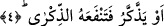

olduğuna göre İbn Ümm-i Mektum’un hareketi bir günah ve bir mâsiyet olarak ortaya
çıkmış olmuyor mu? Peygamber Efendimiz’in yapmış olduğu hareket ise yapılması
vâcip bir hareket olmuyor mu? Öyleyse bütün bunlar ortada dururken Allah
Peygamberimiz (s.a.)’i niçin kınamıştır?”
Bu sorulara şöyle cevap verilmiştir: Durum her ne kadar anlatıldığı gibi ise de
Peygamber Efendimiz’in hareketinin dışa vuran görünüşü, onun zenginlere fakirlerden
daha öncelik tanıdığı, fakirlerin kalplerinin kırılmışlığına az itibar ettiği izlenimini
uyandırıyor. Böyle bir izlenim peygamberlik makamına yakışmaz. Çünkü az önce işâret
olunduğu üzere daha mühim olanı terk etmişti. Bundan dolayı Allah kendisini kınamış
bulunuyor.
“Belki o” a’mâ “temizlenecekti” yâni senden alacak olduğu öğüt ve nasihatlerle
günahların kirinden tümüyle kendini temizleyecekti.
“Le’alle/belki” kelimesi ihtimal ifâde etmektedir. Oysa okuduğumuz âyette bu kelime,
ilgili kişinin Peygamber Efendimiz’den öğüt alarak kendini temize çıkarması kesin
olduğu halde “temizlenme” fiilinin başında gelmektedir. İşte bu kelimenin böyle bir
durumda gelmesi, büyüklerin söz üslûpları açısından mümkündür. Çünkü büyüklerin
konuştukları sözlerde yer alan “le’alle” edatı ile -ihtimal ve azlık değil- kesinlik
kasdedilir.
Şöyle bir açıklama daha yapmak mümkündür. Belki de bu “le’alle” oraya gerçek
anlamında yâni “umma” anlamında gelmiştir. Ancak bu umma Peygamber Efendimiz
açısındandır, yoksa Yüce Allah açısından değildir. Böyle bir umma kelimesinin
getirilmesi ise, gelen kişinin temize çıkmasının umulduğu bir esnâda kendisinden yüz
çevrilmesinin câiz olmayacağına dikkatleri çekmek içindir. “Umulma durumunda yüz
çevirmek câiz olmayınca, bunun kesin olduğu durumlarda nasıl olur da yüz çevrilir”
şeklinde bir vurgu sağlamak içindir. Bu tıpkı şu ifâdeye benzer: “Herhalde sen bu
yaptıklarına pişman olacaksın.”
4. Yahut öğüt alacak da o öğüt ona fayda verecekti.
Âyette geçen “et-tezekkür” öğüt almak demektir. İşte belki bu kişi öğüt alacaktı da bu
öğüt, tam temizlenme derecesine erişmese bile kendisine fayda verecekti.
Keşşaf’ta âyet-i kerimeye şöyle mânâ verilmektedir: Sen sana gelen bu kişiden,
temizlenme veya öğüt alma fiillerinden hangisinin beklenmiş olduğunu bilemezsin. Şâyet
bilseydin bu yapmış olduğun hareketi yapmazdın.
Âyet-i kerimede “yezzekkâ: temizlenecekti” fiilinin günahlardan temizlenme
kabilinden; “ev yezzekkeru: veya öğüt alacaktı” fiilinin ise itâatlerle bezenme
kabilinden olduğuna işâret edilmektedir. Bundan dolayı iki fiil arasına tereddüd anlamı